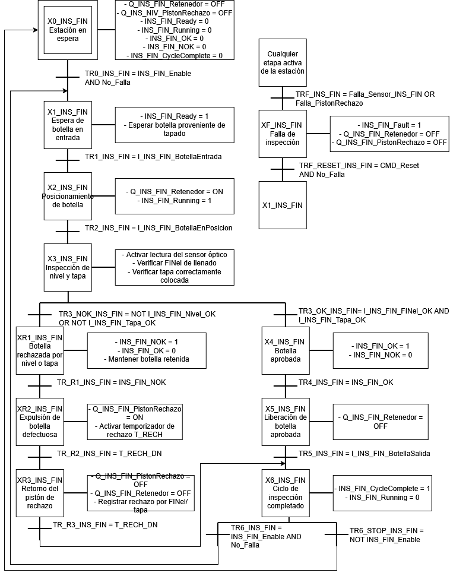
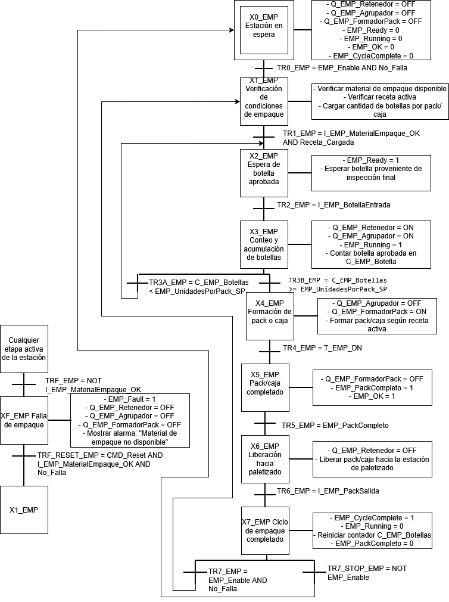

Este módulo aborda los fundamentos de la automatización discreta mediante
Controladores Lógicos Programables (PLC) y sistemas SCADA, integrando
aspectos de programación, supervisión, comunicación industrial y evaluación
económica de proyectos de automatización. Los recursos presentados permiten
comprender el proceso completo, desde el diseño del sistema de control hasta
su implementación en un entorno industrial, favoreciendo la interoperabilidad
entre equipos, la adquisición de datos y la supervisión eficiente de los
procesos productivos.
Lógica de Control en PLC
En esta etapa se desarrolló la estrategia de control del sistema mediante
un Controlador Lógico Programable (PLC), definiendo la secuencia de
funcionamiento de la línea de producción y la interacción entre sensores,
actuadores y elementos de control.
Filosofía de Control
La filosofía de control del proyecto se basa en una arquitectura jerárquica donde un PLC Allen-Bradley, programado en Studio 5000, actúa como controlador principal de la línea automatizada de producción de bebidas carbonatadas. Desde este controlador se coordinan las diferentes estaciones del proceso, la gestión de recetas, las condiciones de habilitación, los enclavamientos de seguridad y la comunicación con las plataformas de simulación, supervisión y análisis de datos.
La línea fue diseñada para fabricar tres referencias de producto mediante un sistema de recetas, permitiendo configurar automáticamente parámetros como el volumen de llenado, tiempos de proceso y condiciones de empaque. La selección de producto únicamente puede realizarse cuando la línea se encuentra fuera del estado de producción, garantizando la integridad del proceso y evitando cambios durante la operación.
La estrategia de control se estructura mediante un GRAFCET maestro implementado en lenguaje Ladder, el cual administra el estado global de la planta, incluyendo inicialización, selección de producto, carga de recetas, producción, cambio de formato y gestión de fallas. A partir de este controlador principal se habilitan las rutinas independientes de cada estación, favoreciendo una arquitectura modular, escalable y de fácil mantenimiento.
Las estaciones de llenado, tapado, inspección, etiquetado, organización en sixpacks, paletizado y embalaje cuentan con rutinas de control independientes que únicamente se ejecutan cuando la línea se encuentra habilitada y no existen condiciones de falla. Esta filosofía permite aislar el funcionamiento de cada proceso, simplificando las labores de diagnóstico, mantenimiento y futuras ampliaciones del sistema.
La celda robotizada de paletizado se integra mediante señales de comunicación entre el PLC y ABB RobotStudio. El PLC únicamente gestiona la activación de la rutina robotizada y supervisa el estado general del robot, mientras que toda la lógica de movimiento y trayectorias permanece programada en el controlador del robot, evitando duplicidad de funciones entre ambos sistemas.
Las fallas de proceso se administran mediante una combinación de alarmas locales y una falla general de línea. Las condiciones críticas detienen automáticamente la producción, mientras que los rechazos individuales de producto, como errores de nivel, tapa o etiquetado, son tratados como eventos de calidad sin afectar la continuidad de la operación.
Finalmente, la arquitectura contempla la integración con plataformas de supervisión y análisis mediante Ignition, Node-RED y Azure, permitiendo la adquisición de datos, visualización de variables de proceso, historización de información y seguimiento de indicadores de producción hasta el nivel MES, manteniendo una separación clara entre las funciones de control, supervisión y gestión de la información.
Narrativa de Control
La operación de la línea automatizada inicia con la ejecución de una rutina de primer escaneo en el PLC, la cual establece un estado seguro para todos los equipos y actuadores. Una vez finalizada la inicialización, el operador puede seleccionar desde la interfaz HMI el producto que desea fabricar entre las tres referencias disponibles: Cola 2 L, Toronja 1.75 L y Lima 1.5 L. La selección de la receta configura automáticamente los parámetros de operación de cada estación, incluyendo tiempos de llenado, tapado, inspección y empaque.
Cuando el operador ordena el inicio de producción, el PLC verifica previamente que la línea se encuentre en modo automático, que no existan fallas activas y que todas las condiciones de seguridad hayan sido satisfechas. Si todas las validaciones son correctas, el controlador habilita la producción y activa progresivamente cada una de las estaciones de la línea.
La primera etapa corresponde al llenado de las botellas, donde cada envase es detectado, posicionado y llenado durante el tiempo definido por la receta activa. Posteriormente, la botella avanza hacia la estación de tapado, donde se verifica la disponibilidad de tapas antes de ejecutar el ciclo correspondiente. Finalizado el proceso de tapado, el producto pasa a una estación de inspección que valida el nivel de llenado y la correcta colocación de la tapa. Las botellas que no cumplen los criterios de calidad son expulsadas automáticamente mediante un sistema de rechazo, mientras que las aprobadas continúan el proceso.
Las botellas aceptadas ingresan a la estación de etiquetado y codificado, donde se aplica la etiqueta correspondiente y se imprime la información del lote y fecha de producción. Posteriormente, una segunda inspección verifica la correcta aplicación de la etiqueta y la legibilidad del código impreso. Al igual que en la primera inspección, los productos defectuosos son retirados de la línea sin detener la producción.
Las botellas aprobadas llegan a la estación de empaque, donde son agrupadas automáticamente en paquetes de seis unidades (six-pack). El PLC mantiene un conteo de las botellas acumuladas y, al completarse el grupo, activa el mecanismo encargado de conformar el paquete y liberarlo hacia la estación de paletizado.
El paletizado se realiza mediante una celda robotizada desarrollada en ABB RobotStudio utilizando un robot industrial ABB IRB 460. En esta arquitectura, el PLC únicamente supervisa el estado del robot y envía la orden de inicio de la rutina de paletizado, mientras que todos los movimientos, trayectorias y secuencias internas son ejecutados por el controlador propio del robot. Una vez conformado el pallet, este pasa a una estación de embalaje donde se realiza el proceso de envoltura mediante un tambor giratorio y un sistema automático de aplicación de película plástica.
Durante toda la operación, el sistema distingue entre fallas de máquina y rechazos de calidad. Las fallas asociadas a la indisponibilidad de equipos, ausencia de materiales o errores del robot generan una detención controlada de la línea hasta que la condición sea corregida y validada por el operador. Por el contrario, los defectos individuales de producto únicamente producen el rechazo de la botella afectada, permitiendo que la producción continúe sin interrupciones.
Toda la información generada por el PLC, incluyendo estados de las estaciones, alarmas, eventos, producción acumulada y variables de proceso, es publicada hacia los sistemas de supervisión mediante una arquitectura integrada con Siemens NX, ABB RobotStudio, Ignition, Node-RED y Azure. NX representa el comportamiento físico de la línea como gemelo digital, RobotStudio simula la operación de la celda robotizada, mientras que las plataformas SCADA y MES permiten supervisar el proceso, registrar indicadores de producción y almacenar información histórica para su posterior análisis.
En conjunto, la lógica de control implementa una arquitectura modular basada en una rutina maestra, rutinas independientes por estación, manejo centralizado de interlocks y fallas, registro de producción y comunicación con sistemas externos. Esta organización facilita el mantenimiento del software, simplifica la validación mediante simulación y permite la integración progresiva de todas las herramientas utilizadas durante el desarrollo del proyecto.
Diagramas GRAFCET


Diagramas Ladder
Sistema SCADA
Como aplicación práctica de los conceptos desarrollados en el módulo,
se implementó un sistema SCADA utilizando Node-RED, integrando la
información proveniente del sistema de automatización y permitiendo
la visualización del estado de la línea de producción en tiempo real.
La solución incorpora herramientas de comunicación industrial,
adquisición de datos e interfaces gráficas para facilitar la
supervisión del proceso y la interacción con los dispositivos de
campo.